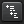
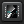
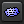

|
Grundlagen |
|  | Klassische Ansicht. Die Medienbibliothek wird nach den
eingestellten Kriterien sortiert, z.B. nach Interpret und Album. |
|  | Coverflow. Die Alben in der Medienbibliothek werden in einem Coverflow angezeigt. |
|  | Tagcloud. Die Eigenschaften (Tags) der Titel in ihrer Sammlung werden in einer Tagcloud organisiert. |